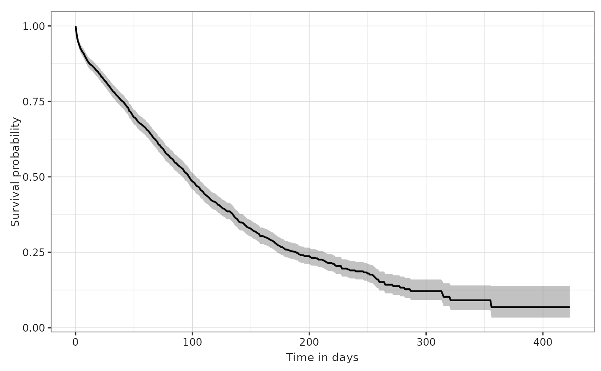

Plot survival results
plotSurvival.RdPlot survival results
Usage
plotSurvival(
result,
ribbon = TRUE,
facet = NULL,
colour = NULL,
cumulativeFailure = FALSE,
riskTable = FALSE,
riskInterval = 30,
logLog = FALSE,
timeScale = "days",
style = NULL
)Arguments
- result
Survival results
- ribbon
If TRUE, the plot will join points using a ribbon
- facet
Variables to use for facets
- colour
Variables to use for colours
- cumulativeFailure
whether to plot the cumulative failure probability instead of the survival probability
- riskTable
Whether to print risk table below the plot
- riskInterval
Interval of time to print risk table below the plot
- logLog
If TRUE, the survival probabilities are transformed using the log-log formula
- timeScale
The scale of time in the x-axis. Can be "days", "months", or "years"
- style
A character string defining the visual theme to apply to the plot. You can set this to NULL to apply the standard ggplot2 default style, or provide a name for one of the package's pre-defined styles. Refer to the plotStyle() function for all available style pre-defined themes. For further customization, you can always modify the returned ggplot object directly.
Examples
# \donttest{
cdm <- mockMGUS2cdm()
surv <- estimateSingleEventSurvival(cdm,
targetCohortTable = "mgus_diagnosis",
outcomeCohortTable = "death_cohort")
#> - Getting survival for target cohort 'mgus_diagnosis' and outcome cohort
#> 'death_cohort'
#> Getting overall estimates
#> `eventgap`, `outcome_washout`, `censor_on_cohort_exit`, `follow_up_days`, and
#> `minimum_survival_days` casted to character.
plotSurvival(surv)
#> Warning: eventgap column will be added to the survival result object to include all
#> relevant information

# }